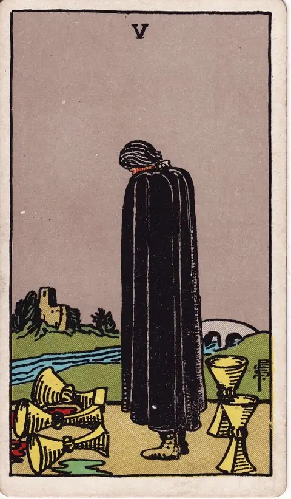

컵 · 타로 카드 백과사전
컵 5

그림: Pamela Colman Smith · RWS 덱 · Wikimedia Commons 원본·이용 조건
편집: 가만점방 · 해설 보완: 2026년 9월 30일
그림에서 읽는 상징
망토를 입은 인물 앞에는 엎어진 세 잔, 뒤에는 서 있는 두 잔이 있습니다. 멀리 다리와 건물이 보입니다.
가만점방의 해석
잃은 것에 집중하는 마음과 여전히 남은 자원을 함께 읽습니다. 남은 것이 있다는 이유로 슬픔을 빨리 끝내라고 요구하지 않습니다.
역방향에서 돌아볼 점
상실을 인정하면서 다른 가능성을 볼 준비가 되었는지 살펴봅니다.
질문에 적용하는 예시
“실망한 뒤 무엇부터 정리할까?”
아쉬웠던 일을 충분히 적은 뒤 아직 도움받을 수 있는 사람이나 자원을 따로 적으세요. 두 목록은 서로를 취소하지 않습니다.
예시는 가만점방이 구성한 가상 상황입니다. 실제 상담 사례나 효과를 입증한 사례가 아닙니다.
해설 기준과 참고 자료
그림 설명은 라이더–웨이트–스미스 덱의 도상을 관찰한 내용입니다. 이어지는 해석·역방향 질문·실천 예시는 가만점방의 자기성찰용 설명이며, 원전의 예언 문구를 번역한 것이 아닙니다. 덱과 해석 전통에 따라 의미는 달라질 수 있습니다.
전통적 도상 설명 참고: A. E. Waite, The Pictorial Key to the Tarot. 가만점방의 편집 원칙 · 질문 만드는 법
아래 상황별 문장은 상징을 일상에 연결하는 오락용 해석입니다. 실제 사건·건강 상태·투자 성과를 예측하지 않습니다.
정방향
키워드: 상실감 · 후회 · 슬픔 · 엎질러진 미련 · 무거운 뒷걸음 · 가라앉은 발걸음
조언: 지나간 것에 매몰되기보다 아직 남아있는 것에 눈을 돌려보세요.
연애운
솔로
지나간 인연에 대한 미련으로 새로운 만남에 마음을 열지 못하는 시기입니다. 아픔을 인정하는 것에서 회복이 시작됩니다.
커플
서운함이나 갈등으로 관계에 상처가 남는 시기입니다. 잃은 것에만 집중하지 말고 지금 남아있는 마음을 확인해보세요.
재물운
소비
예상치 못한 지출로 후회가 남는 시기입니다. 이미 벌어진 일에 매몰되기보다 남은 예산부터 다시 점검해보세요.
투자
자기성찰 키워드: 상실감 · 후회 · 슬픔. 이 리딩은 수익·손실이나 매매 시점을 예측하지 않습니다. 기대와 확인된 사실을 나누고, 비용·계약 조건·감당할 수 있는 손실을 실제 자료로 검토하세요. 카드의 방향이나 키워드를 투자 결정의 근거로 사용하지 마세요.
수입
받았어야 할 몫을 놓치고 못내 마음이 무거운 시기입니다. 지나버린 몫보다 지금 남은 기회에 마음을 두세요.
취업운
구직
놓친 기회에 대한 아쉬움이 계속 마음에 남는 시기입니다. 지나간 기회보다 앞으로 남은 기회에 집중해보세요.
이직
이전 자리를 떠난 것에 대한 후회가 밀려올 수 있는 시기입니다. 이미 내린 결정보다 지금 할 수 있는 일을 찾아보세요.
직장운
팀워크
팀 프로젝트가 기대에 못 미치는 결과로 끝나 다들 의기소침해질 수 있는 시기입니다. 잘잘못을 따지기보다 다음 프로젝트를 위한 회고에 집중해보세요.
개인성과
맡았던 업무에서 아쉬운 결과가 나와 마음이 무거운 시기입니다. 자책을 오래 끌기보다 다음 업무에서 만회할 방법을 찾아보세요.
사업운
창업준비
실패한 시도에 대한 후회로 다음 발걸음이 무거운 시기입니다. 잃은 자원보다 남은 자원으로 무엇을 할지 고민해보세요.
운영중
사업에서 입은 손해가 뼈아프게 다가오는 시기입니다. 지나간 손실에 매몰되지 말고 남은 자원을 재정비해보세요.
학업운
시험준비
기대에 못 미친 결과로 실망이 큰 시기입니다. 결과에 매몰되기보다 남은 시험 기회에 집중해보세요.
진로고민
선택하지 않은 길에 대한 미련이 남는 시기입니다. 지나간 선택보다 지금 걷고 있는 길에 집중해보세요.
건강운
신체
자기성찰 키워드: 상실감 · 후회 · 슬픔. 이 리딩은 건강 상태나 질환의 발생·회복을 예측하지 않습니다. 최근의 생활 기록에서 무리했던 부분과 쉬어갈 시간을 살펴보세요. 증상이나 치료 여부는 카드가 아니라 의료 전문가를 통해 확인하세요.
정신
자기성찰 키워드: 상실감 · 후회 · 슬픔. 이 리딩은 건강 상태나 질환의 발생·회복을 예측하지 않습니다. 지금의 감정을 내 말로 표현할 수 있는지, 부담을 나눌 사람이 있는지 돌아보세요. 불편이 지속되면 적절한 전문 도움을 구하세요.
대인관계운
새로운 인연
새로운 사람을 만나도 예전 관계와 자꾸 비교하게 되어 선뜻 곁을 내주기 어려운 시기입니다. 비교는 잠시 내려두고 눈앞의 사람을 있는 그대로 봐보세요.
기존 관계
관계에서 겪은 서운함이 쉽게 가시지 않는 시기입니다. 지나간 갈등보다 남아있는 신뢰에 집중해보세요.
명예운
생각보다 낮은 평가에 자존심이 상할 수 있는 시기입니다. 남의 말에 흔들리기보다 스스로 떳떳한 기준을 다시 세워보세요.
이사운
마음에 두었던 곳으로 옮기지 못해 서운함이 남는 시기입니다. 아쉬움은 접어두고 지금 조건에 맞는 곳부터 다시 찾아보세요.
자식운
아이와 관련해 아쉬움이 남는 일이 생기는 시기입니다. 자책하기보다 지금부터 할 수 있는 것에 집중해보세요.
역방향
키워드: 회복 · 수용 · 재출발 준비 · 차오르는 기력 · 걷혀가는 눈앞의 안개 · 새 흐름 맞이
조언: 충분히 슬퍼했다면 이제 남은 것을 향해 발걸음을 옮겨보세요.
연애운
솔로
지나간 사랑에 대한 슬픔을 딛고 새로운 마음을 낼 준비가 되는 시기입니다. 이제는 과거보다 앞을 바라봐도 괜찮습니다.
커플
갈등을 겪었던 관계가 서서히 회복되는 시기입니다. 남아있는 좋은 부분에 다시 집중해보세요.
재물운
소비
지출에 대한 후회를 딛고 재정을 다시 추스르기 시작하는 시기입니다. 이번 경험을 다음 계획에 반영해보세요.
투자
자기성찰 키워드: 회복 · 수용 · 재출발 준비. 이 리딩은 수익·손실이나 매매 시점을 예측하지 않습니다. 기대와 확인된 사실을 나누고, 비용·계약 조건·감당할 수 있는 손실을 실제 자료로 검토하세요. 카드의 방향이나 키워드를 투자 결정의 근거로 사용하지 마세요.
수입
놓쳤던 벌이를 되찾을 실마리가 다시 보이는 시기입니다. 미련은 접어두고 다음 벌이 쪽으로 눈을 돌려보세요.
취업운
구직
실패의 아쉬움을 딛고 다시 도전할 힘을 얻는 시기입니다. 이전의 경험을 다음 지원에 활용해보세요.
이직
지난 선택에 대한 후회를 정리하고 앞으로 나아가는 시기입니다. 남은 가능성에 눈을 돌려보세요.
직장운
팀워크
실패했던 프로젝트를 계기로 팀원들이 서로의 역할을 다시 점검하는 시기입니다. 그때 부족했던 부분을 이번엔 미리 채워보세요.
개인성과
지난 실수를 곱씹기보다 다음 업무에 곧장 집중할 힘이 생기는 시기입니다. 지금 맡은 업무에서 만회할 기회를 찾아보세요.
사업운
창업준비
실패를 딛고 다시 도전할 준비가 되는 시기입니다. 이전의 실수를 자산 삼아 다시 시작해보세요.
운영중
한 차례 크게 흔들렸던 사업을 다잡고 재정비에 들어가는 시기입니다. 지금 남아있는 고객과 자원을 중심으로 다음 전략을 그려보세요.
학업운
시험준비
실망을 딛고 다시 마음을 다잡는 시기입니다. 부족했던 부분을 인정하고 다음 계획을 세워보세요.
진로고민
다른 전공이었다면 어땠을까 하는 미련이 여전히 남아있는 시기입니다. 이제는 상상보다 지금의 전공에서 할 수 있는 것을 찾아보세요.
건강운
신체
자기성찰 키워드: 회복 · 수용 · 재출발 준비. 이 리딩은 건강 상태나 질환의 발생·회복을 예측하지 않습니다. 최근의 생활 기록에서 무리했던 부분과 쉬어갈 시간을 살펴보세요. 증상이나 치료 여부는 카드가 아니라 의료 전문가를 통해 확인하세요.
정신
자기성찰 키워드: 회복 · 수용 · 재출발 준비. 이 리딩은 건강 상태나 질환의 발생·회복을 예측하지 않습니다. 지금의 감정을 내 말로 표현할 수 있는지, 부담을 나눌 사람이 있는지 돌아보세요. 불편이 지속되면 적절한 전문 도움을 구하세요.
대인관계운
새로운 인연
닫혀 있던 마음이 서서히 풀리며 사람을 향한 관심이 되살아나는 시기입니다. 서두르지 말고 자연스러운 만남부터 만들어보세요.
기존 관계
소원했던 사이가 작은 계기로 다시 가까워지기 시작하는 시기입니다. 예전처럼 연락을 주고받으며 자연스럽게 거리를 좁혀보세요.
명예운
실망을 딛고 평판을 회복해가는 시기입니다. 꾸준한 모습으로 신뢰를 다시 쌓아가 보세요.
이사운
아쉬움을 뒤로하고 새로운 이동을 준비하는 시기입니다. 이전의 아쉬움을 참고해 더 신중하게 계획해보세요.
자식운
아쉬움을 딛고 다시 마음을 다잡는 시기입니다. 지나간 일보다 아이와의 남은 시간에 집중해보세요.
같은 슈트: 컵 에이스 · 컵 2 · 컵 3 · 컵 4 · 컵 5 · 컵 6 · 컵 7 · 컵 8 · 컵 9 · 컵 10 · 컵 시종 · 컵 기사 · 컵 퀸 · 컵 킹
홈에서 직접 카드 뽑아보기 ↗
운세는 가볍게, 선택은 당신답게.
오락 목적의 콘텐츠이며 전문적인 법률·의료·재정·심리 상담을 대체하지 않습니다.